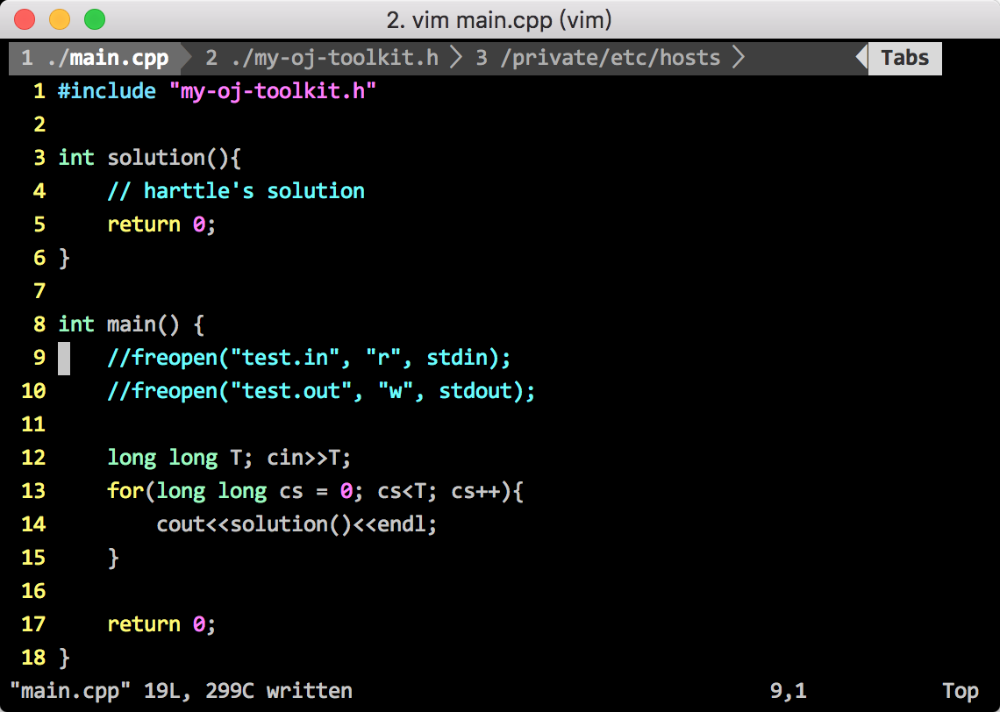

多文件编辑的场景太常见了：代码比对、项目重构、模块构建… 最初harttle在碰到这些问题时直接转向IDE了，其实Vim不仅支持多文件编辑，而且支持多种风格：标签页(tab)、窗口(window)、缓冲区(buffer)等。 今天harttle就来介绍一下Vim强大的多文件编辑！本文介绍Vim标签页的使用.
要做一个强大的IDE，除了多文件编辑技巧，你可能还需要终端复用和目录树。
打开与关闭
标签页是最常见的多文件编辑方式吧，熟悉IDE的小伙伴一定能很快上手！ 使用-p参数来用多个标签页启动Vim：
vim -p main.cpp my-oj-toolkit.h /private/etc/hosts

在Vim中也可以打开和关闭标签：
:tabe[dit] {file} edit specified file in a new tab
:tabf[ind] {file} open a new tab with filename given, searching the 'path' to find it
:tabc[lose] close current tab
:tabc[lose] {i} close i-th tab
:tabo[nly] close all other tabs (show only the current tab)
中括号中的部分可以省略，在Vim中
:h tabedit可以查看命令帮助。
移动标签
:tabs list all tabs including their displayed window
:tabm 0 move current tab to first
:tabm move current tab to last
:tabm {i} move current tab to position i+1
标签跳转
:tabn go to next tab
:tabp go to previous tab
:tabfirst go to first tab
:tablast go to last tab
在正常模式（normal）下，还可以使用快捷键：
gt go to next tab
gT go to previous tab
{i}gt go to tab in position i
可以设置更通用的切换标签页快捷键，比如我的~/.vimrc是这样设置的:
noremap <C-L> <Esc>:tabnext<CR>
noremap <C-H> <Esc>:tabprevious<CR>
-= 完 =-

Comments
So what do you think? Did I miss something? Is any part unclear? Leave your comments below.
comments powered by Disqus